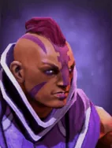
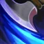

Mana break
Passive Ability
Each attack will drain the mana of the target enemy chess piece, dealing additional physical damage equal to the mana drained..
Active ability: Activates when conditions are met.
Whenever a certain amount of mana is drained cumulatively, Anti-Mage will activate the Mana Void, target with a lower mana enemy, and deal magical damage based on the mana lost by the target together with a brief stun to enemies within range.
| ★ | ★★ | ★★★ | |
|---|---|---|---|
| Each attack consumes mana | 40 | 60 | 100 |
| Triggers upon reaching the required cumulative damage | 100 | ||
| Mana Void Damage Coefficient | 2 | 4 | 8 |
| Mana Void Stun Duration | 0.5 | ||
| Mana Void Impact Radius | 300 | 300 | 400 |
- Anti-Mage will prioritize attacking targets with mana.
A martial technique, refined from the gentle techniques of the monks of the Starry Temple, capable of turning magical energy against its wielder.
Stats
| ★ | ★★ | ★★★ | |
|---|---|---|---|
| Health | 850 | 1700 | 3400 |
| Mana | 0 | 0 | 0 |
| Armor | 7 | 7 | 7 |
| Magic resistance | 30% | 30% | 30% |
| Attack damage | 80–110 | 160–220 | 320–440 |
| Attack interval (s) | 0.9 | 0.9 | 0.9 |
| Attack range | 205 | 205 | 205 |
| Move speed | 500 | 500 | 500 |
 Elf · Evasion
Elf · Evasion
- (3) Your Elves gain +25% evasion.
- (6) Your Elves gain another +40% evasion, about 55% in total with the (3) bonus.
- (9) When an Elf dodges an attack, it turns invisible for 1s and summons an illusion of the attacker on your side for 7s. The illusion deals 50% damage and has no mana. 5s cooldown per Elf.
 Demon Hunter · Shuttered Soul
Demon Hunter · Shuttered Soul
Each Demon Hunter counts as an extra Demon type for the enemy, which can break their single-Demon (Fel Power) bonus.
- (2) Your Demon bonus stays active no matter how many different Demons you field, and enemy Demon Hunters can't break it. Fel Power stacks count every friendly Demon plus enemy Demon Hunters (max 7).
- (4) All allies deal pure damage. Physical and magical damage is turned into pure damage at its full value, so it ignores armor and magic resistance.